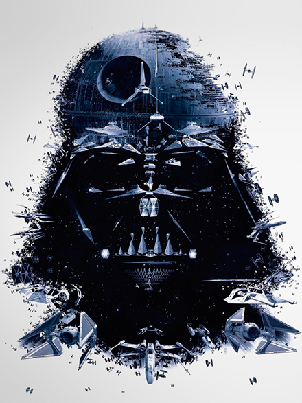

SINOPSIS
Star Wars, traducido al español como La Guerra de las Galaxias, es una franquicia compuesta de películas, novelas, cómics, videojuegos y juguetes. Es un universo de ficción creado por George Lucas. La historia de Star Wars utiliza arquetipos comunes a la ciencia ficción, climax político y mitología, así como temas musicales de estos aspectos.
Siendo uno de los ejemplos más importantes de la space opera (subgénero de ciencia ficción) Star Wars se ha convertido en una parte esencial de la cultura popular, así como una de las películas de mayor recaudación en taquilla de todos los tiempos.
A pesar de que la mayoría de la gente considera a Star Wars como ciencia ficción, George Lucas ha declarado en numerosas ocasiones que estas películas no son de "ciencia ficción", principalmente porque la tecnología que muestra no tiene base científica. Así, serían de "aventura épica" y nada más. Según el propio George Lucas, su primera intención fue la de hacer una película de Flash Gordon, como homenaje a los viejos seriales de ciencia ficción de los años 1930, pero Dino De Laurentiis ya había adquirido los derechos para hacerla, por lo que tuvo que crear sus propios personajes, e incorporar otras influencias (Kurosawa, Campbell).
Las películas de Star Wars han sido estrenadas a lo largo de los últimos 40 años habiendo previsión de nuevos filmes para los próximos, así:
-
- 1.- Episode IV - A New Hope (1977)
- 2.- Episode V - The Empire Strikes Back (1980)
- 3.- Episode VI - Return of the Jedi (1983)
- 4.- Episode I - The Phantom Menace (1999)
- 5.- Episode II - Attack of the Clones (2002)
- 6.- Episode III - Revenge of the Sith (2005)
- 7.- Episode VII - The Force Awakens (2015)
- 8.- ....